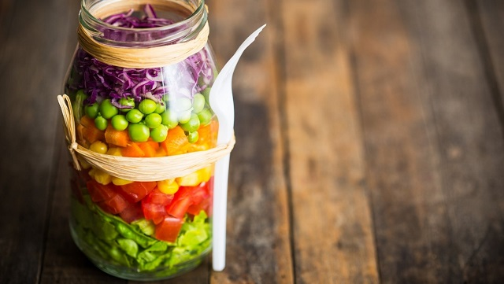
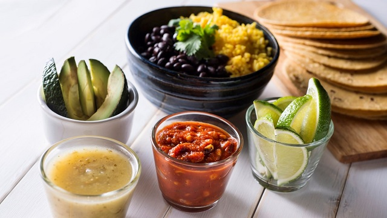

SPICE POOL
HOME
ARTICLES
RECIPES
GO BAKING
REVIEWS
HEALTH-TIPS
SIGN-UP AND CONTACT
LOGIN
☰
FOOD ARTICLES

Vitamin C, ascorbic acid and food-based nutrients: Three nutritional wisdom breakthroughs I've come to realize as a food research scientist
Thursday, April 28, 2016
by Mike Adams, the Health Ranger
VIEW MORE >

Vitamin C, ascorbic acid and food-based nutrients: Three nutritional wisdom breakthroughs I've come to realize as a food research scientist
Thursday, April 28, 2016
by Mike Adams, the Health Ranger
VIEW MORE >
Vitamin C, ascorbic acid and food-based nutrients: Three nutritional wisdom breakthroughs I've come to realize as a food research scientist
Thursday, April 28, 2016
by Mike Adams, the Health Ranger
VIEW MORE >